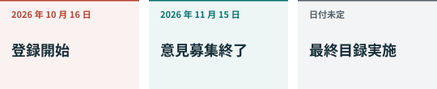

01. 何がいつ変わったか¶
一つの公告、二つの時間軸¶

商務部と科学技術部は2026年10月16日に公告を発表しました。一方は輸出禁止・制限技術目録の改定案、もう一方は直ちに始まる事前登録です。登録の開始は、追加される禁止・制限がすべて確定して施行されたことを意味しません。CN48
意見募集は10月16日から11月15日。臨時登録は改定目録の正式公布・実施まで続きます。終了の固定日はありません。本版で調べた資料からは、この案に代わる最終目録は確認できませんでした。後の公告で状況は変わり得ます。CN48
どのような移転か¶
登録対象には、海外への所有権移転、国内技術の海外利用許諾、国内技術の所有者または実質的支配者が海外主体となる場合が含まれます。商務部が別途指定する場合や未完了輸出も対象です。物品が国境を越えなくても企業取引が関係し得る、というのが支配条項からの私たちの読み方です。CN48、第三部
登録はecomp.mofcom.gov.cnの技術貿易アプリで行い、輸出者、受領者、国・地域、技術、用途、見込額などを記載します。同一受領者への一度の輸出に複数技術があればまとめられ、その他は原則別です。登録は輸出許可そのものではありません。CN48 CN-A2
禁止は該当範囲の輸出を止め、制限は許可の道筋を設けます。自動許可にも手続きがあります。対象外は特定の規定から除くことです。条件を先に読む必要があります。CN-A1
例えば11月に未公開モデル技術を海外に許諾する場合、現在の登録と既存法を調べます。募集終了まで待つだけでは不十分ですが、草案だけを根拠に全面禁止済みとも言えません。この例は取引の承認ではありません。